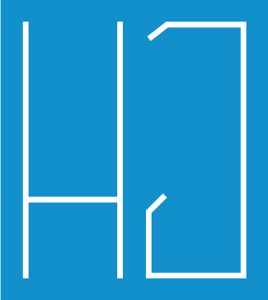

SUPER SIMPLE ANI!!!
Animation_01 general_movements_등속linear 🚚🚚🚚
BOX1
BOX2
Animation_02 Frame_animation // 선결: sprite img 🌎🌎🌎
Animation_03 Perspective_animation // Flip! 🍓🍓🍓
Woops!
It'me
Woops!
It'me
Woops!
It'me
Internet Ex 대응
Woops!
It'me
Animation_03 - Perspective_animation // Do u want to build a snowman? ⛄⛄⛄
Knock Knock!
Hellooo!
Here!!
Animation_04 - Wave 원의 축을 바꿔서 원을 로테이션시킴, 박스에 넣어야 안정됨 // 🌊🌊🌊

GREETHINGS! IT'S HJ.LEE!
Live Colorfully In Flow Of Life!
text,text,text..
love life...
5.Parallax effect1 기술원형_라이브러리활용 TweensMax
I'm Circle
I'm Circle
I'm Circle
I'm Circle
5.Parallax effect1/ 활용예시
Moon Light
5.Parallax effect2/ 마우스오버